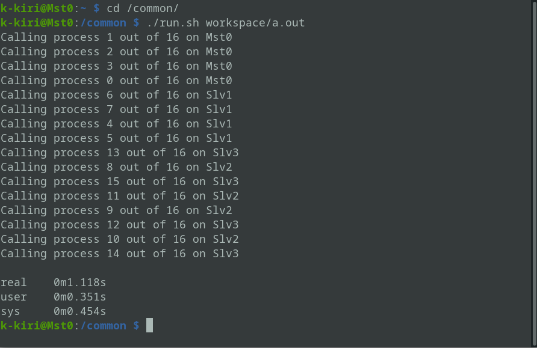

タイトル「ラズパイ・スパコン」は明らかに誇張表現だ。先ず謝っておこうと思う。 しかし、スパコンと呼ぶのには理由がある。
このラズパイ・スパコンは、4つのシングルボードコンピュータ・Raspberry Pi（以下、ラズパイ）から構成されており、計16コアのCPUで並列計算をすることが可能だ。 有名なスーパーコンピュータはどれも、たくさんのCPUを並列に動かすことによって莫大な量の計算を高速に実行している。 その仕組みをほんの一部切り取ったのがこのラズパイ・スパコンなのである。 （というのも又誇張だろうか・・・）
ラズパイ・スパコンの製作あたって使用した部品リスト
| 名前 | 個数 |
|---|---|
| Raspberry Pi 4 (Model B) | 4 |
| ヒートシンク | 4セット |
| 積層式ケース | 1 |
| microSDカード | 4 |
| LANケーブル | 4 |
| usbケーブル (type c) | 4 |
| 充電器（電源用） | 1 |
| スイッチング・ハブ | 1 |
ラズパイは、端的に言うと1枚の基盤に載ったパソコンである。 主に教育用として作られたものであるため、パソコンとしては非常に安価であるのが特徴だ。 もちろん、一般的なパソコンに性能は劣るが、インターネットを閲覧したり、動画を再生したり、一般的な用途にも幅広く活用できる。
ラズパイのもう一つの特徴はGPIOピンが搭載されていることだ。ラズパイ・スパコンでは利用していないが、電子工作などで活用できる。
現時点では、OpenMPIを用いたプロセス並列計算が可能だ。 そもそも、MPI（Message Passing Interface）とは、並列計算プログラミングを提供する枠組みであり、OpenMPIはMPIの実装の1つである。 純粋なMPI並列ではコア1つにプロセス1つを割り当てるが、プロセス並列であるため、プロセス間はメモリを共有しない。 したがって、プロセス間で情報の共有や処理の同期が必要となることがある。
mpiexecと-Hオプションで、OpenMPIを使って書いた並列計算プログラムが実行できる。HelloWorldの代わりに16個全てのコアからメッセージを送った。  円周率を求めるプログラムと、スパコン体験塾で製作した素数ゼミシミュレーション2を並列化してラズパイ・スパコン上で走らせてみた。
かっこいい。
ネットワークの設定に苦労した。部室からインターネットに接続するためには学校のプロキシサーバーを経由しなければならない。又、複数のラズパイを一度の設定で接続できるようにIPアドレスを固定しなければならない。これらの2つを両立できなかった。 結局、インターネットに接続することはできないまま、ソフトウェアは自宅でインストールすることになった。 完全にネットワークに関する自分の知識不足である。 しかし、この経験を通して少しネットワークに関する知識とLinuxに関する知識は深まったと思う。この知識がどこで役に立つかはまだわからないが。
このラズパイ・スパコンは趣味の産物だ。実用性はほとんどない。単純な計算力で比較するとIntel core iシリーズや、AMD Ryzenシリーズの１つのCPUに及ばないだろう。しかし、自分でラズパイを連携させて並列計算させることは面白いし、ロマンのある研究（工作？）になったと思う。 後悔があるとすれば、4ノードでは少なかったことだ。16ノードくらいほしいところだが、特に使い道も無くLinuxとOpenMPIによる並列計算の学習にしか使えないものなので4ノード程度で丁度良かったのかもしれない。
また、私が並列計算の手法を教わり、この研究（工作）のきっかけとなったのは高度情報科学技術研究機構（RIST）が主催する「スパコン体験塾」だ。こちらについての記事もぜひ参照してほしい。
最後に、この研究のために期間限定で学校のIPアドレスを４つ固定してくださった技術科のN先生の協力に多大なる感謝を申し上げる。